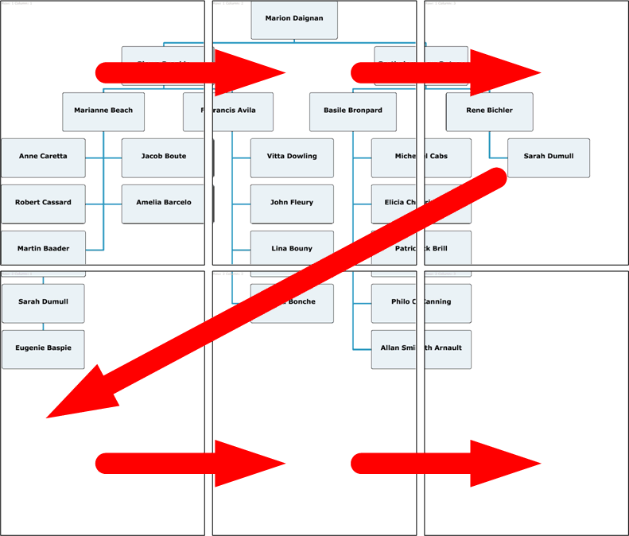

The
PrintOrgChart class allows
the printing of large organization charts on more than one page.
The process of printing a large organization chart is
similar to printing a multipage data grid with the Adobe®
Flex®
4 PrintDataGrid class. See Printing multipage output in Advanced Flex Programming>Printing in the
Adobe documentation. The main difference is that pages represent a
matrix of rows and columns. To visualize your organization chart,
you have to reassemble the pages.
The validNextPage property
is true if the PrintOrgChart control has data beyond the current print page. You use this property
to determine whether you need to format and print an additional page.
The nextPage() method
moves to the next set of data to print. Pages are printed row by row,
as shown in the following figure.

The following code shows a loop that prints an organization
chart on multiple pages.
// Queue the first page
printJob.addObject(thePrintView);
// While there are more pages, print them
while (thePrintView.myOrgChart.validNextPage) {
//Display next set of data (page)
thePrintView. myOrgChart.nextPage();
//Queue the additional page.
printJob.addObject(thePrintView);
}
Note
If you want to print a chart that uses pictures, load
them before starting the print operation or they will not be visible.